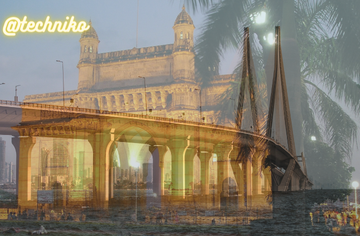

MUMBAI TOURISM

Mumbai, previously known as Bombay is one of the most populous and biggest cities of Maharashtra. Also the biggest metropolis of this state, Mumbai is also popular as the entertainment and financial capital. It is the largest city of India and fondly called as the city of dreams. It is a place filled with dreamers and people who work hard day and night to achieve their dreams. From struggling actors, laboureres, Bollywood stars to gangsters, Mumbai has a lot. A lot that can be written about and talked about! Mumbai is also home to one of the biggest slum area as well as home to the richest and thus it is only fair to describe Mumbai as a city for all. The majorsly spoken language is definitely Hindi , but this city has welcomed people from all faiths and religion warmly. If you want to know and experience diversity, visit Mumbai. This city also has its very own language that is the Bambaiiya Hindi. Known to be a city filled with warm and friendly people, we believe that anything written about Mumbai is never enough.
If you are planning to visit Mumbai, trust us when we say it may look intimidating initially, but it is not. In fact it is one of the friendliest cities of India. The extreme energy and the fast paced life of the people here cannot be easily matched. The heart of Mumbai has some of the best and beautiful colonial architecture and if you venture out to the lesser known lanes, you will also come across several distinct bazaars, temples, fancy restaurants and a nightlife that is one of its kinds. Before Mumbai became the city hat it is now, it was a collection of seven islands which was eventually formed to form Bombay. It was given to the British as dowry to Charles II who married Catherine of Braganza. The island city that Mumbai is today is owing to these reclamation and these islands were home to several fishing colonies. The British made Mumbai an important port since it was already had a natural harbor but it rose to its richness during the American Civil War when cotton supplies were completely stopped from America to Britain. India made the most of this situation and it is said that traders earned approximately 80 million pounds which is a lot of money. This made way for Bombay’s very own merchant traders who were rich. As you walk around in the many lanes of South Bombay you will still get to witness the remnants of this city’s glorious past. Cotton factories and many buildings that are dilapidated are still to be seen scattered around many parts of Mumbai, especially South Mumbai. Apart from this, another every interesting par about this city is that in spite of the several unfortunate incidents and acts of terrorism this city has seen, it still moves on and lives with the same love for Mumbai.
ALSO READ 10 pictures that truly define Mumbai
22 of India’s most beautiful monuments that make us proud to be Indians
Its resilient nature stands out and it has helped the people of this city move on easily and strongly. There are some cities that just manage to attract you, Mumbai is one of them. The spirit of this city is very contagious and addictive. And like the popular saying goes, ones who have lived in Mumbai for longer find it hard to like or love any other city. There is a little of everything for everybody in Mumbai. So whether you visit the place for work for pleasure or to settle, it won’t cease to impress you.
There are several attractions in Mumbai that will leave you awe struck. A walk around the streets of Colaba or near Churchgate is enough for you get a glimpse of the colonial era buildings. Some of the many monuments that give Mumbai a British look and feel are Chattrapati Shivaji Terminus, flora Fountain, High Court, Taj Hotel, Gateway of India and also the Asiatic Society. These are just some of the many attractions that this city of dreams has. There is a lot more to see and do in this busy city. Let us take a look at some of the best places to visit in Mumbai. If you do make a trip any time soon to this city, you know that these are the places that you must visit. Unlike the notion that there aren’t too many places to see in Mumbai, the fact is that this city is every traveler’s delight. ALSO READ 6 films that perfectly capture the spirit of Mumbai
BEST PLACES TO VISIT IN MUMBAI
Apart from the regular and popular places of interests, there are many hidden treasures in Mumbai that one must visit to experience the true spirit of a city that never sleeps.
Gateway of India
The Gateway of India that was built in the 20th century is one of the biggest tourist attractions of Mumbai. The building stands beautifully overlooking the Arabian Sea and the location of this building is what makes it so attractive. It is 85 feet tall and it is one of Mumbai’s most significant landmarks. The construction of the Gateway of India took almost 13 years to finish and it was built in dedication to the first visit done by King George V and also Queen Mary to India. This happened in 1911 and hence if you have never noticed, there is also a line that reads, ‘Erected to commemorate the landing in India of their Imperial Majesties King George V and Queen Mary on the second December MCMXI.’ Right opposite to this attraction stands another beautiful and historical building- the Taj Mahal Hotel. This hotel has existed even before the Gateway of India was erected, 21 years before to be precise. Opposite to this beautiful landmark of Mumbai also stands a statue of Shivaji that has a historical significance. Shivaji was a king who resorted to guerilla warfare so that his Maratha Empire could be established. He wanted to set up his empire in the Sahyadri mountain range so that it stands as a symbol of pride and courage that the empire strongly reflected in those times. The statue of Shivaji was unveiled on Republic day in 1961. The Gateway also has total of five jetties to take you to other places of interest away from Mumbai like the Elephanta caves and also Alibaug. Visit the Gateway of India for the scenic beauty. The views of the sea from this monument are worth watching and truly a sight to behold. The architecture is a mix of both Hindu and Muslim styles. The arch of the monument has been given a Muslim styled architecture and the decorating part has been done using Hindu style.
Chhatrapati Shivaji Terminus
Another great attraction is the Chhatrapati Shivaji Terminus that is visited by millions of people. This terminus was also built during the British rule and the construction of the same started in 1787 that went on till 1887. In 1887 it was finally put open for public use. Mumbaikars call this station CST. Before this terminus got its name of Shivaji, it was named Victoria Terminus and was called VT. There are many people who still refer to CST as VT. The architecture of this terminus is highly inspired by Victorian Gothic styles and it is one of the first to be set up in Mumbai. It is inevitable that people who visit Mumbai from faraway places don’t visit this place. Since it serves as a major transport source for Mumbaikars, the CST is really significant. There are a total of 18 platforms and among these seven are only for local uses. Local trains in Mumbai that connect harbor, western and central railways and the 11 platforms are for trains that go outside Mumbai. For travelers’ comfort, they also have an in house dormitory that can be used by people only if pre booked. This historical building has seen it’s mentioning in many movies that also includes Slumdog Millionaire that was an award winning movie. And being a UNESCO World Heritage Site, it is lifeline of Mumbai and hence is also considered to be one of the most significant monuments of this city and also the nation. Not many know that CST also organizes a tour that will let you go through the many features of this brilliant structure. These are features that you may not notice otherwise. The CST has also been victim to an unfortunate even when terrorists attacked some in 2008. The terrorist attacks have gone down in Indian history to be one of its kinds and the terminus that was flooded with people got killed. Though, even after this, CST has sprung back to life and carries people to and fro just like it used to. This spirit of people is what makes Mumbai so charming.
ALSO READ Did you know these 4 fascinating facts about Mumbai’s Chhatrapati Shivaji terminus?
The Asiatic Society
The Asiatic Society of Mumbai is one historical building that has been a photographer’s delight for all kinds of shoot since many years. The Asiatic society is about Asian studies that were started with an intention of promoting any kind of useful knowledge. The society has a library that houses at least hundred books and 15,000 books out of them have been classified as valuable and rare. Apart from the many books it also has many artifacts and manuscripts in Persian, Prakrit and also Sanskrit that are all ancient. They have approximately 3000 of such manuscripts. For art lovers, this place is nothing less than paradise. Some of these manuscripts have been written on paper, while there are also some that have been written on a leaf. If you love things like these, you will definitely love time spend at the Asiatic Society of Mumbai. With such a vast collection of artifacts, coins, manuscripts, it is no wonder that every art lover loves visiting this place. The society at one point, 19th and 20th century to be exact, served as an important meeting point for many intellectuals and also for many library events. The reason why it is one of the most important tourist attractions of Mumbai is also because it takes pride in being one of the oldest literary societies of the country. There are other societies like the Geographical and the Anthropological Societies of Bombay but they are merged with the Asiatic society. This library is the reason why there was another such society in Bengal. The steps that take you snide to the society are also a hang out spot for many students. This society is also home to original manuscripts of Divine comedy that was written by Dante who was an Italian poet. Located in the fort area of Mumbai, you should be here whenever you plan to visit Mumbai. ALSO READ We bet you didn’t know this little-known fact about Mumbai’s Asiatic Society!
Bandra-Worli Sea Link
The Bandra Worli Sea link is another place of interest that most tourists want to visit and view. This sea link has added a feather to the charm of this city. Originally called as Rajiv Gandhi Seal Link, this bridge has been built beautifully over the Arabian Sea and it was started in 2000 that got completed in 2010. This bridge connects suburbs of Bandra to the Worli and it is one of the most beautiful infrastructures of Mumbai. While most people use this route as a part of their daily travel, there are some who head to this link to only witness and experience the beauty of the bridge. At night the bridge looks even better with lights. For locals in Mumbai, the sea link has come as a relief from traffic and longer hours of commute. The traveling time has come down to 20 to 25 minutes as compared to 90 mins that it was earlier. The best way to take a look at this bridge is from Worli Seaface. The views are breath taking from there and even from Bandra Fort. Take out some time and head to any of these places and enjoy the views of sunset. You are definitely going to love the view.
Did you know these cool facts about the Bandra-Worli sea link
Mount Mary Church
Another great attraction is the Mount Marcy Church that is called the Basilica of our Lady Mount situated in the westerns suburbs of Mumbai. This church is highly significant not just for Christians but also for people who belong to different faiths and religions. The Mount Mary Festival called as the Bandra Fair is very popular and people from all over flock to the church. During this period the church is crowded and it might get a little congested. If you want to experience and view the beauty of this church it is better you visit on days when there is lesser crowded. It is said that the church was built in the 16th century and the Portuguese on their visit to India built this church and they even got the statue of Virgin Mary. In 18th century however, the Marathas completely destroyed the church and in 1760 it was rebuilt and that is what you see today. Mount Mary church is one of the many attractions of Mumbai that is also visited by many each day. It is a belief among people that if you ask for something whole heartedly, your wishes will be fulfilled. The idol is believed to have such powers. It is said that the church also houses the blood of Pope John Paul II who visited our country in 1986. Visit the church on New Year’s Eve , that si when the church is illuminated and it is a sight to behold.
Travel Home Destinations Weekend Getaways Explore Articles
Search destination...
Home ❯ Travel ❯ Destinations
MUMBAI
Places to visit Things to do How to reach Articles Photos Map
MUMBAI TOURISM
Facebook share
Twitter share
Mumbai skyline
Mumbai, previously known as Bombay is one of the most populous and biggest cities of Maharashtra. Also the biggest metropolis of this state, Mumbai is also popular as the entertainment and financial capital. It is the largest city of India and fondly called as the city of dreams. It is a place filled with dreamers and people who work hard day and night to achieve their dreams. From struggling actors, laboureres, Bollywood stars to gangsters, Mumbai has a lot. A lot that can be written about and talked about! Mumbai is also home to one of the biggest slum area as well as home to the richest and thus it is only fair to describe Mumbai as a city for all. The majorsly spoken language is definitely Hindi , but this city has welcomed people from all faiths and religion warmly. If you want to know and experience diversity, visit Mumbai. This city also has its very own language that is the Bambaiiya Hindi. Known to be a city filled with warm and friendly people, we believe that anything written about Mumbai is never enough.
If you are planning to visit Mumbai, trust us when we say it may look intimidating initially, but it is not. In fact it is one of the friendliest cities of India. The extreme energy and the fast paced life of the people here cannot be easily matched. The heart of Mumbai has some of the best and beautiful colonial architecture and if you venture out to the lesser known lanes, you will also come across several distinct bazaars, temples, fancy restaurants and a nightlife that is one of its kinds. Before Mumbai became the city hat it is now, it was a collection of seven islands which was eventually formed to form Bombay. It was given to the British as dowry to Charles II who married Catherine of Braganza. The island city that Mumbai is today is owing to these reclamation and these islands were home to several fishing colonies. The British made Mumbai an important port since it was already had a natural harbor but it rose to its richness during the American Civil War when cotton supplies were completely stopped from America to Britain. India made the most of this situation and it is said that traders earned approximately 80 million pounds which is a lot of money. This made way for Bombay’s very own merchant traders who were rich. As you walk around in the many lanes of South Bombay you will still get to witness the remnants of this city’s glorious past. Cotton factories and many buildings that are dilapidated are still to be seen scattered around many parts of Mumbai, especially South Mumbai. Apart from this, another every interesting par about this city is that in spite of the several unfortunate incidents and acts of terrorism this city has seen, it still moves on and lives with the same love for Mumbai.
ALSO READ 10 pictures that truly define Mumbai
22 of India’s most beautiful monuments that make us proud to be Indians
Its resilient nature stands out and it has helped the people of this city move on easily and strongly. There are some cities that just manage to attract you, Mumbai is one of them. The spirit of this city is very contagious and addictive. And like the popular saying goes, ones who have lived in Mumbai for longer find it hard to like or love any other city. There is a little of everything for everybody in Mumbai. So whether you visit the place for work for pleasure or to settle, it won’t cease to impress you.
There are several attractions in Mumbai that will leave you awe struck. A walk around the streets of Colaba or near Churchgate is enough for you get a glimpse of the colonial era buildings. Some of the many monuments that give Mumbai a British look and feel are Chattrapati Shivaji Terminus, flora Fountain, High Court, Taj Hotel, Gateway of India and also the Asiatic Society. These are just some of the many attractions that this city of dreams has. There is a lot more to see and do in this busy city. Let us take a look at some of the best places to visit in Mumbai. If you do make a trip any time soon to this city, you know that these are the places that you must visit. Unlike the notion that there aren’t too many places to see in Mumbai, the fact is that this city is every traveler’s delight. ALSO READ 6 films that perfectly capture the spirit of Mumbai
BEST PLACES TO VISIT IN MUMBAI
Apart from the regular and popular places of interests, there are many hidden treasures in Mumbai that one must visit to experience the true spirit of a city that never sleeps.
Gateway of India
Mumbai- Gateway
The Gateway of India that was built in the 20th century is one of the biggest tourist attractions of Mumbai. The building stands beautifully overlooking the Arabian Sea and the location of this building is what makes it so attractive. It is 85 feet tall and it is one of Mumbai’s most significant landmarks. The construction of the Gateway of India took almost 13 years to finish and it was built in dedication to the first visit done by King George V and also Queen Mary to India. This happened in 1911 and hence if you have never noticed, there is also a line that reads, ‘Erected to commemorate the landing in India of their Imperial Majesties King George V and Queen Mary on the second December MCMXI.’ Right opposite to this attraction stands another beautiful and historical building- the Taj Mahal Hotel. This hotel has existed even before the Gateway of India was erected, 21 years before to be precise. Opposite to this beautiful landmark of Mumbai also stands a statue of Shivaji that has a historical significance. Shivaji was a king who resorted to guerilla warfare so that his Maratha Empire could be established. He wanted to set up his empire in the Sahyadri mountain range so that it stands as a symbol of pride and courage that the empire strongly reflected in those times. The statue of Shivaji was unveiled on Republic day in 1961. The Gateway also has total of five jetties to take you to other places of interest away from Mumbai like the Elephanta caves and also Alibaug. Visit the Gateway of India for the scenic beauty. The views of the sea from this monument are worth watching and truly a sight to behold. The architecture is a mix of both Hindu and Muslim styles. The arch of the monument has been given a Muslim styled architecture and the decorating part has been done using Hindu style.
Chhatrapati Shivaji Terminus
Chhatrapati Shivaji Terminus
Another great attraction is the Chhatrapati Shivaji Terminus that is visited by millions of people. This terminus was also built during the British rule and the construction of the same started in 1787 that went on till 1887. In 1887 it was finally put open for public use. Mumbaikars call this station CST. Before this terminus got its name of Shivaji, it was named Victoria Terminus and was called VT. There are many people who still refer to CST as VT. The architecture of this terminus is highly inspired by Victorian Gothic styles and it is one of the first to be set up in Mumbai. It is inevitable that people who visit Mumbai from faraway places don’t visit this place. Since it serves as a major transport source for Mumbaikars, the CST is really significant. There are a total of 18 platforms and among these seven are only for local uses. Local trains in Mumbai that connect harbor, western and central railways and the 11 platforms are for trains that go outside Mumbai. For travelers’ comfort, they also have an in house dormitory that can be used by people only if pre booked. This historical building has seen it’s mentioning in many movies that also includes Slumdog Millionaire that was an award winning movie. And being a UNESCO World Heritage Site, it is lifeline of Mumbai and hence is also considered to be one of the most significant monuments of this city and also the nation. Not many know that CST also organizes a tour that will let you go through the many features of this brilliant structure. These are features that you may not notice otherwise. The CST has also been victim to an unfortunate even when terrorists attacked some in 2008. The terrorist attacks have gone down in Indian history to be one of its kinds and the terminus that was flooded with people got killed. Though, even after this, CST has sprung back to life and carries people to and fro just like it used to. This spirit of people is what makes Mumbai so charming.
ALSO READ Did you know these 4 fascinating facts about Mumbai’s Chhatrapati Shivaji terminus?
The Asiatic Society
Mumbai-Asiatic-Society
The Asiatic Society of Mumbai is one historical building that has been a photographer’s delight for all kinds of shoot since many years. The Asiatic society is about Asian studies that were started with an intention of promoting any kind of useful knowledge. The society has a library that houses at least hundred books and 15,000 books out of them have been classified as valuable and rare. Apart from the many books it also has many artifacts and manuscripts in Persian, Prakrit and also Sanskrit that are all ancient. They have approximately 3000 of such manuscripts. For art lovers, this place is nothing less than paradise. Some of these manuscripts have been written on paper, while there are also some that have been written on a leaf. If you love things like these, you will definitely love time spend at the Asiatic Society of Mumbai. With such a vast collection of artifacts, coins, manuscripts, it is no wonder that every art lover loves visiting this place. The society at one point, 19th and 20th century to be exact, served as an important meeting point for many intellectuals and also for many library events. The reason why it is one of the most important tourist attractions of Mumbai is also because it takes pride in being one of the oldest literary societies of the country. There are other societies like the Geographical and the Anthropological Societies of Bombay but they are merged with the Asiatic society. This library is the reason why there was another such society in Bengal. The steps that take you snide to the society are also a hang out spot for many students. This society is also home to original manuscripts of Divine comedy that was written by Dante who was an Italian poet. Located in the fort area of Mumbai, you should be here whenever you plan to visit Mumbai. ALSO READ We bet you didn’t know this little-known fact about Mumbai’s Asiatic Society!
Bandra-Worli Sea Link
Mumbai 7
The Bandra Worli Sea link is another place of interest that most tourists want to visit and view. This sea link has added a feather to the charm of this city. Originally called as Rajiv Gandhi Seal Link, this bridge has been built beautifully over the Arabian Sea and it was started in 2000 that got completed in 2010. This bridge connects suburbs of Bandra to the Worli and it is one of the most beautiful infrastructures of Mumbai. While most people use this route as a part of their daily travel, there are some who head to this link to only witness and experience the beauty of the bridge. At night the bridge looks even better with lights. For locals in Mumbai, the sea link has come as a relief from traffic and longer hours of commute. The traveling time has come down to 20 to 25 minutes as compared to 90 mins that it was earlier. The best way to take a look at this bridge is from Worli Seaface. The views are breath taking from there and even from Bandra Fort. Take out some time and head to any of these places and enjoy the views of sunset. You are definitely going to love the view.
Did you know these cool facts about the Bandra-Worli sea link
Mount Mary Church
Mumbai-Mount-Mary-Church1
Another great attraction is the Mount Marcy Church that is called the Basilica of our Lady Mount situated in the westerns suburbs of Mumbai. This church is highly significant not just for Christians but also for people who belong to different faiths and religions. The Mount Mary Festival called as the Bandra Fair is very popular and people from all over flock to the church. During this period the church is crowded and it might get a little congested. If you want to experience and view the beauty of this church it is better you visit on days when there is lesser crowded. It is said that the church was built in the 16th century and the Portuguese on their visit to India built this church and they even got the statue of Virgin Mary. In 18th century however, the Marathas completely destroyed the church and in 1760 it was rebuilt and that is what you see today. Mount Mary church is one of the many attractions of Mumbai that is also visited by many each day. It is a belief among people that if you ask for something whole heartedly, your wishes will be fulfilled. The idol is believed to have such powers. It is said that the church also houses the blood of Pope John Paul II who visited our country in 1986. Visit the church on New Year’s Eve , that si when the church is illuminated and it is a sight to behold.
ALSO READ 10 Best churches for midnight mass in Mumbai
20 most beautiful churches in India
Marine Drive
marine drive
Marine Drive is one of the best places of Mumbai. This place of interest is what defines Mumbai in the best possible way. Popular for being an island city, Marine drive is a long stretch that has been made by the Arabian Sea and it stretches up to 3.5 km. It is also called as the Queen’s Necklace and it is called so, because of the long stretch that lights up at night and looks similar to a pearl necklace. The whole promenade is flanked beautifully with palm trees. The best time to visit Marine drive is at night when there is comparatively lesser crowd and there is a distinct peace you feel at that time. The cool breeze, the flowing waves and the lights all makes the feel of sitting here a beautiful one. There would be hardly anybody disturbing you and your moments of solitude, except for the tea vendors that sell hot cups of tea and even coffee till late night. The Marine drive begins at Nariman point to end at Juhu and Girgaum.
Marine drive has also been featured in several Bollywood movies to represent the city. Mumbai is identified by this beautiful attraction and why not, take a walk here and you will know what we are talking about. This is another spot that offers breathtaking views of sunset. And if you happen to visit the city during Monsoons, let us tell you Marine drive just gets better with rains.
Haji Ali
Haji Ali Dargah is one of the most renowned and revered mausoleums of the country. Situated in Worli, the Haji Ali Dargah is located in the middle of an island and that’s one of the many reasons that make this place so attractive. Haji Ali is another very important landmark of Mumbai and it is said that this dargah was built in 1431 and it is the mausoleum of Pir Haji Ali Shah who was a Sufi saint. Approximately 30,000 people visit this dargah every week and ad per legends it is said that the Saint had once visited India to spread the teachings of Islam. Before he passed away, he had asked his followers to keep the coffin carrying his dead body into the sea. And today that spot is exactly where the Haji Ali stands. The Dargah has been given an Islamic architecture style and the white domes and the beautiful minarets are examples of the same. Mughal style architecture is one of the best and also a pleasing to the eye architecture. The gateway of the Dargah is made of pure marble and also the minarets have been built with white marble. There is an attraction within this attraction and that is the beautiful Qawwali Khana where they hold Qawwali recitals every Friday. The interiors have been done intricately with mirrors and on some portions of the shrine you will also see verses from the Quran written. For those who are believers, they do not really need a reason to visit the Haji Ali Dargah. And for the non believers, the architecture and the scenic location serves as a good reason to visit this divine place. And on Ed, the relics of Prophet Muhamed are put on for public display.